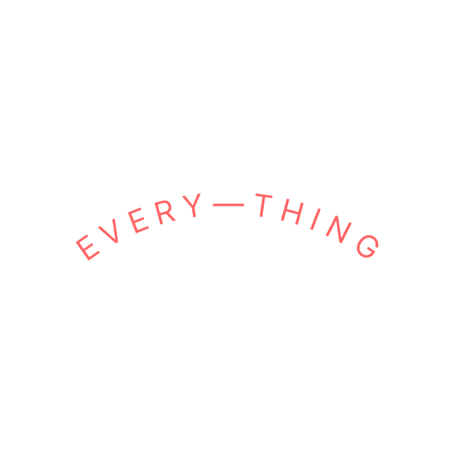

EVERY—THING

Discursive/speculative design
EVERY—THING is a thought experiment that questions under what terms we as users navigate in the SAAS discourse.
Frankie
AI
Frankie is a argumentation teaching chatbot with whom activists, debaters and politicians can practice their (ideological) arguments
EVERY—THING
Discursive/speculative design
EVERY—THING is a thought experiment that questions under what terms we as users navigate in the SAAS discourse.